00 | 前言
在计算机领域中，网络是信息传输、接收、共享的虚拟平台，通过它把各个点、面、体的信息联系到一起，可以进行数据传递，从而实现资源的共享
网络编程从大方面说就是对信息的发送到接受，通过操作相应 API 调度计算机硬件资源，并利用传输管道（网线）进行数据交换的过程
一些关于网络编程方面的问题看似简单，但想做到完全理解却并不容易，学习高性能网络编程，需要掌握两个核心要点：第一就是理解网络协议，并在这个基础上和操作系统内核配合，感知各种网络 I/O 事件；第二就是学会使用线程处理并发
本文会从实践出发，从问题的角度对知识点进行阐述
01 | 网络编程入门
1.1 基本概念
1.1.1 客户端 - 服务器网络模型

-
当一个客户端需要服务时，它会向服务器端发送一个请求，这个请求是按照双方约定的格式来发送的，以便保证服务器端可以理解
-
服务器端收到这个请求后，会根据双方约定的格式解释它，并且以合适的方式进行操作
-
服务器端完成处理请求之后，会给客户端发送一个响应，然后等待客户端的下一步操作
-
客户端收到响应并进行处理
区别出客户端和服务器，本质上是因为二者编程模型是不同的，但无论是客户端，还是服务器端，它们运行的单位都是进程
1.1.2 IP 和端口
-
在 TCP/IP 协议栈中，IP 用来表示网络世界的地址
-
在一台计算机上是可以同时存在多个连接的，区分出不同的连接就需要用到端口这个概念
端口号是一个 16 位的整数，最多为 65536
-
计算机的 IP 地址是唯一的，每个连接的端口号是不同的
-
当一个客户端发起连接请求时，客户端的端口是由操作系统内核临时分配的，称为临时端口，服务器端的端口通常是一个众所周知的端口
Well Known Ports -
一个连接可以通过客户端 - 服务器端的 IP 和端口唯一确定，这叫做套接字对，按照（客户端地址、客户端端口、服务端地址、服务端端口）这样的四元组表示：
（clientaddr:clientport, serveraddr: serverport)
1.1.3 子网掩码
在网络 IP 划分的时候需要区分两个概念：
-
网络
network：表示这组 IP 共同的部分，比如在 192.168.1.1~192.168.1.255 这个区间里，它们共同的部分是 192.168.1.0 -
主机
host：表示这组 IP 不同的部分，上例中 1~255 就是不同的部分，表示有 255 个可用的不同 IP例如 IPv4 地址，192.0.2.12，前面三个 bytes 是子网，最后一个 byte 是 host，或者说 host 为 8 位，子网掩码为 192.0.2.0/24（255.255.255.0）
-
网络地址位数由子网掩码
Netmask决定，将 IP 地址与子网掩码进行位与操作，就能得到网络的值 -
注意：子网掩码的格式永远都是二进制格式：前面是一连串的 1，后面跟着一连串的 0
255.192.0.0 这样的子网掩码无法直观地知道有多少个 1，多少个 0，后来有了新的表示方法：IP / 网络的位数
如 IP 192.0.2.12/30：有 30 个 1， 2 个 0，主机个数为 4
1.1.4 保留网段和端口
保留网段
-
国际标准组织在 IPv4 地址空间里面专门划出了一些网段，这些网段不会用做公网上的 IP 而是仅仅保留做内部使用，这些地址称作保留网段
-
下表是三个保留网段，用于专用网络中的本地通信

-
255.255.255.255/32：用于受限广播地址 -
224.0.0.0/4：用于多播
保留端口
-
保留端口就是大家约定俗成的，已经被对应服务广为使用的端口，比如 ftp 的 21 端口，ssh 的 22 端口，http 的 80 端口等
-
glibc 定义的保留端口：
/* Standard well-known ports. */ enum { IPPORT_ECHO = 7, /* Echo service. */ IPPORT_DISCARD = 9, /* Discard transmissions service. */ IPPORT_SYSTAT = 11, /* System status service. */ IPPORT_DAYTIME = 13, /* Time of day service. */ IPPORT_NETSTAT = 15, /* Network status service. */ IPPORT_FTP = 21, /* File Transfer Protocol. */ IPPORT_TELNET = 23, /* Telnet protocol. */ IPPORT_SMTP = 25, /* Simple Mail Transfer Protocol. */ IPPORT_TIMESERVER = 37, /* Timeserver service. */ IPPORT_NAMESERVER = 42, /* Domain Name Service. */ IPPORT_WHOIS = 43, /* Internet Whois service. */ IPPORT_MTP = 57, IPPORT_TFTP = 69, /* Trivial File Transfer Protocol. */ IPPORT_RJE = 77, IPPORT_FINGER = 79, /* Finger service. */ IPPORT_TTYLINK = 87, IPPORT_SUPDUP = 95, /* SUPDUP protocol. */ IPPORT_EXECSERVER = 512, /* execd service. */ IPPORT_LOGINSERVER = 513, /* rlogind service. */ IPPORT_CMDSERVER = 514, IPPORT_EFSSERVER = 520, /* UDP ports. */ IPPORT_BIFFUDP = 512, IPPORT_WHOSERVER = 513, IPPORT_ROUTESERVER = 520, /* Ports less than this value are reserved for privileged processes. */ IPPORT_RESERVED = 1024, /* Ports greater this value are reserved for (non-privileged) servers. */ IPPORT_USERRESERVED = 5000
1.1.5 域名系统
-
IP 协议的职责是网际互连，它使用 IP 地址把 MAC 编号转换成了四位数字，对物理网卡的 MAC 地址做了一层抽象，只要每个小网络在 IP 地址这个概念上达成一致，不管在 MAC 层有多大的差异，都可以接入 TCP/IP 协议栈，终汇合进整个互联网
-
但数字形式的地址对于人类来说却既难以记忆又难以输入，于是域名系统
Domain Name System出现了，用有意义的名字来作为 IP 地址的等价替代，在 IP 地址之上再进行一次抽象
域名的形式
-
在 DNS 中，域名
Domain Name又称为主机名Host -
全球域名按照从大到小的结构，形成了一棵树状结构，实际访问一个域名时，是从最底层开始写起，域名用
.分隔成多个单词，级别从左到右逐级升高，最右边的被称为顶级域名
-
域名还有许多其他的用途：在Web服务器中，域名可以用来标识虚拟主机，决定由哪个虚拟主机来对外提供服务，比如在 Nginx 里就会使用
server_name指令：server { listen 80; # 监听 80 端口 server_name a.test.com; # 主机名是 a.test.com ... } -
域名本质上是个名字空间系统，使用多级域名就可以划分出不同的国家、地区、组织、公司、部门，每个域名都是独一无二的，可以作为一种身份的标识，因为这个特性，域名也被扩展到了其他应用领域
- 比如 Java 的包机制采用域名作为命名空间
XML里使用URI作为名字空间，也间接使用了域名
域名的解析
-
IP 地址必须转换成 MAC 地址才能访问主机，使用 TCP/IP 协议来通信要使用 IP 地址，所以需要把域名做转换，映射到它的真实 IP，这就是域名解析
-
DNS 的核心系统是一个三层的树状分布式服务，基本对应域名的结构：
-
根域名服务器
Root DNS Server：管理顶级域名服务器，返回 com、net、cn 等顶级域名服务器的 IP 地址 -
顶级域名服务器
Top-level DNS Server：管理各自域名下的权威域名服务器，比如 com 顶级域名服务器可以返回 apple.com 域名服务器的 IP 地址 -
权威域名服务器
Authoritative DNS Server：管理自己域名下主机的 IP 地址，比如 apple.com 权威域名服务器可以返回 www.apple.com 的 IP 地址
-
-
根域名服务器必须是众所周知的，目前全世界共有 13 组根域名服务器，又有数百台的镜像，保证一定能够被访问到，有了这个系统以后，任何一个域名都可以在这个树形结构里从顶至下进行查询（把域名从右到左走了一遍），获得域名对应的 IP
- 目前全世界有 13 组根 DNS 服务器，因为 DNS 协议里包大小的限制（512 字节），再除以 DNS 记录长度，最多 15 组，再去掉 buffer
- HTTP 协议中并没有明确要求必须使用 DNS，但实际上为了方便访问互联网上的 Web 服务器，通常都会使用 DNS 来定位或标记主机名，间接地把 DNS 与 HTTP 绑在了一起
-
在核心 DNS 系统之外，还有两种手段用来减轻域名解析的压力，基本思路就是缓存
-
大公司、网络运行商都会建立自己的 DNS 服务器作为用户 DNS 查询的代理，这些服务器被称为非权威域名服务器，可以缓存之前的查询结果，如果已经有了记录，就无需再向根服务器发起查询，直接返回对应的 IP 地址，这些 DNS 服务器的数量要比核心系统的服务器多很多，而且大多部署在离用户很近的地方（比较知名的 DNS 有 Google 的8.8.8.8，Microsoft 的4.2.2.1，CloudFlare 的1.1.1.1）
-
操作系统里也会对 DNS 解析结果做缓存，直接在操作系统里就可以拿到 IP 地址，另外，操作系统里还有一个特殊的主机映射文件（在 Linux 里是
/etc/hosts，在 Windows 里是C:\WINDOWS\system32\drivers\etc\hosts），如果操作系统在缓存里找不到 DNS 记录，就会找这个文件
-
总结：DNS 是一个树状的分布式查询系统，为了提高查询效率，外围有多级的缓存

负载均衡
-
重定向，对外服务的域名不变，而主机的 IP 地址变动。当主机有情况需要下线或迁移时，可以更改 DNS 记录让域名指向其他机器。
-
基于域名实现的负载均衡
-
域名解析可以返回多个 IP 地址，客户端收到多个 IP 地址后，使用轮询算法依次向服务器发起请求，实现负载均衡
-
域名解析可以配置内部的策略，返回离客户端近的主机或者当前服务质量好的主机，在 DNS 端把请求分发到不同的服务器
-
1.1.6 数据报和字节流
-
TCP又叫字节流套接字
Stream Socket，UDP 又叫数据报套接字Datagram Socket，一般以SOCK_STREAM与SOCK_DGRAM分别表示 TCP 和 UDP 套接字，Datagram Sockets有时称为无连接的 socketsconnectionless sockets -
字节流套接字是可靠的，双向连接的通讯串流，TCP 通过诸如连接管理，拥塞控制，数据流与窗口管理，超时和重传等一系列精巧而详细的设计，提供了高质量的端到端的通信方式
-
数据报套接字也可以做到更高的可靠性，只不过这种可靠性，需要应用程序进行设计处理，比如对报文进行编号，设计
Request-Ack机制，再加上重传等，在一定程度上可以达到更为高可靠的 UDP 程序
1.1.7 其他
1.2 网络分层
1.2.1 TCP/IP 网络分层模型
-
链接层
link layer，负责在以太网、WiFi 这样的底层网络上发送原始数据包，工作在网卡这个层次，使用 MAC 地址来标记网络上的设备，所以有时也叫MAC层 -
网际层或网络互连层
internet layer，IP 协议就处在这一层，可以在链接层的基础上，用 IP 地址取代 MAC 地址，把许许多多的局域网、广域网连接成一个虚拟的巨大网络，在这个网络里找设备时只需要把 IP 地址翻译成 MAC 地址 -
传输层
transport layer，这个层次协议的职责是保证数据在 IP 地址标记的两点之间可靠地传输，是 TCP 协议工作的层次 -
应用层
application layer，有各种面向具体应用的协议（如 Telnet、SSH、FTP、SMTP、HTTP）MAC 层的传输单位是帧
frame，IP 层的传输单位是包packet，TCP 层的传输单位是段segment，HTTP 的传输单位则是消息或报文message，它们可以统称为数据包
1.2.2 OSI 网络分层模型
-
物理层，网络的物理形式，例如电缆、光纤、网卡、集线器等等
-
数据链路层，它基本相当于 TCP/IP 的链接层
-
网络层，相当于 TCP/IP 里的网际层
-
传输层，相当于 TCP/IP 里的传输层
-
会话层，维护网络中的连接状态，即保持会话和同步
-
表示层，把数据转换为合适、可理解的语法和语义
-
应用层，面向具体的应用传输数据

常用术语：
四层负载均衡：工作在传输层上，基于 TCP/IP 协议的特性，例如 IP 地址、端口号等实现对后端服务器的负载均衡
七层负载均衡：工作在应用层上，看到的是 HTTP 协议，解析 HTTP 报文里的 URI、主机名、资源类型等数据，再用适当的策略转发给后端服务器
三层路由：设备工作在ip层，报文经过有路由功能的设备时，设备分析报文中的头部信息，拿到ip地址，根据网段范围，进行本地转发或选择下一个网关
二层转发：设备工作在链路层，帧在经过交换机设备时，检查帧的头部信息，拿到目标mac地址，进行本地转发和广播
1.2.3 5层参考模型
-
TCP/IP 是一个纯软件的栈，没有网络应有的最根基的电缆、网卡等物理设备的位置，而 OSI 则补足了这个缺失，在理论层面上描述网络更加完整
-
OSI 的分层模型在四层以上分的太细，而 TCP/IP 实际应用时的会话管理、编码转换、压缩等和具体应用经常联系的很紧密，很难分开

-
因此有了结合 OSI 和 TCP/IP 优点的 5 层参考模型
1.3 Socket 套接字
1.3.1 Socket 是什么？
-
socket译为套接字， 在网络编程中寓意是可以通过插口接入的方式，快速完成网络连接和数据收发，它把 TCP/IP 层复杂的操作抽象为几个简单的接口供应用层调用以实现进程在网络中通信To allow for many processes within a single Host to use TCP communication facilities simultaneously, the TCP provides a set of addresses or ports within each host. Concatenated with the network and host addresses from the internet communication layer, this forms a socket. A pair of sockets uniquely identifies each connection.（RFC793）
-
理解 socket

-
服务器端初始化的过程：首先初始化
socket，之后需要执行bind函数，将自己的服务能力绑定在一个固定的地址和端口上，紧接着执行listen操作，将原先的socket转化为服务端的socket，服务端最后阻塞在accept上，此时，服务器端已经准备就绪，等待客户端的请求 -
客户端需要先初始化
socket，再执行connect向服务器端的地址和端口发起连接请求这个过程就是TCP 三次握手
Three-way Handshake，三次握手完成，客户端和服务器端建立连接，就进入了数据传输过程，一旦连接建立，数据的传输就不再是单向的，而是双向的具体来说，客户端进程向操作系统内核发起
write字节流写操作，内核协议栈将字节流通过网络设备传输到服务器端，服务器端从内核得到信息，将字节流从内核读入到进程中，并开始业务逻辑的处理，完成之后，服务器端再将得到的结果以同样的方式写给客户端 -
四次挥手：当客户端交互完成需断开连接时，会执行
close函数，内核此时会通过原先的连接链路向服务端发送一个FIN包，服务端收到之后执行被动关闭，这时候整个链路处于半关闭状态，此后服务端也会执行close函数，整个链路才会真正关闭，半关闭的状态下，发起 close 请求的一方在没有收到对方 FIN 包之前都认为连接是正常的，而在全关闭的状态下，双方都感知连接已经关闭 -
以上所有的操作，都是通过
socket来完成的，无论是connect还是accept，或者read/write操作等，socket 是用来建立连接，传输数据的唯一途径
-
1.3.2 Socket 发展历史*
-
socket是加州大学伯克利分校的研究人员在 20 世纪 80 年代早期提出的，所以也被叫做伯克利套接字，研究者们设想用 socket 的概念屏蔽掉底层协议栈的差别 -
第一版实现
socket的就是TCP/IP协议，最早是在 BSD 4.2 Unix 内核上实现了 socket -
很快人们就发现这么一个概念带来了网络编程的便利，Linux 作为 Unix 系统的一个开源实现，很早就从头开发实现了 TCP/IP 协议，伴随着 socket 的成功，Windows 也引入了 socket 的概念，在今天的世界里，socket 成为网络互联互通的标准
1.3.3 套接字地址格式
-
在使用套接字时，首先要解决通信双方寻址的问题
-
下面是套接字的通用地址结构（适用于多种地址族）
/* POSIX.1g 规范规定了地址族为 2 字节的值. */ typedef unsigned short int sa_family_t; /* 描述通用套接字地址 */ struct sockaddr{ sa_family_t sa_family; /* 地址族. 16-bit*/ char sa_data[14]; /* 具体的地址值 112-bit */ };结构体里第一个字段是地址族，表示使用什么样的方式对地址进行解释和保存，地址族在 glibc 里的定义非常多，常用的有：
-
AF_LOCAL：表示的是本地地址，对应的是Unix套接字，这种情况一般用于本地socket通信，很多情况下也可以写成AF_UNIX、AF_FILE -
AF_INET：因特网使用的 IPv4 地址 -
AF_INET6：因特网使用的 IPv6 地址
-
-
AF_含义是Address Family，还有以PF_表示的宏，含义是Protocol Family（协议族），用 AF_ 这样的值来初始化 socket 地址，用 PF_ 这样的值来初始化 socket在
<sys/socket.h>头文件中可以看到这两个值是一一对应的/* 各种地址族的宏定义 */ #define AF_UNSPEC PF_UNSPEC #define AF_LOCAL PF_LOCAL #define AF_UNIX PF_UNIX #define AF_FILE PF_FILE #define AF_INET PF_INET #define AF_AX25 PF_AX25 #define AF_IPX PF_IPX #define AF_APPLETALK PF_APPLETALK #define AF_NETROM PF_NETROM #define AF_BRIDGE PF_BRIDGE #define AF_ATMPVC PF_ATMPVC #define AF_X25 PF_X25 #define AF_INET6 PF_INET6 -
套接字地址格式比较

IPv4 套接字格式地址*
-
常用的 IPv4 地址族的结构
/* IPV4 套接字地址，32bit 值. */ typedef uint32_t in_addr_t; struct in_addr { in_addr_t s_addr; }; /* 描述 IPV4 的套接字地址格式 */ struct sockaddr_in { sa_family_t sin_family; /* 16-bit */ in_port_t sin_port; /* 端口口 16-bit*/ struct in_addr sin_addr; /* Internet address. 32-bit */ /* 这里仅仅用作占位符，不做实际用处 */ unsigned char sin_zero[8]; };sockaddr_in与sockaddr一样，都有一个 16-bit 的sin_family字段，对于 IPv4 来说这个值就是AF_INET- 端口号最多是 16-bit，最大支持 $2^{16}$= 65536，支持寻址的端口号最多就是 65535
-
IPv4 地址是一个 32-bit 的字段，最多支持的地址数就是$2^{32}$，大约是 42 亿，但随着互联网发展，全球接入的设备越来越多，地址渐渐显得不太够用了
IPv6 套接字地址格式*
-
IPv6 的地址结构
struct sockaddr_in6 { sa_family_t sin6_family; /* 16-bit */ in_port_t sin6_port; /* 传输端口号 # 16-bit */ uint32_t sin6_flowinfo; /* IPv6 流控信息 32-bit*/ struct in6_addr sin6_addr; /* IPv6 地址 128-bit */ uint32_t sin6_scope_id; /* IPv6 域 ID 32-bit */ };整个结构体长度是 28 个字节，地址族是
AF_INET6，端口同 IPv4 地址一样（其中流控信息和域 IP 这两个字段，一个在 glibc 的官网上没出现，另一个是当前未使用的字段） -
地址从 32 位升级到 128 位，完全解决了寻址数字不够的问题
本地套接字地址格式*
-
本地套接字用来做为本地进程间的通信，即
AF_LOCALstruct sockaddr_un { unsigned short sun_family; /* 固定为 AF_LOCAL */ char sun_path[108]; /* 路径名 */ };为什么本地套接字格式不需要端口号，而 IPv4 和 IPv6 套接字格式却需要端口号呢？
一切皆文件，socket也是文件，socket基于文件操作，因此只需要根据文件路径便可区分，不需要使用端口，也正因如此，IPv4 和 IPv6 套接字地址结构的长度是固定的，而本地地址是可变的
1.4 TCP 建立连接
1.4.1 服务端准备连接
创建套接字
-
要创建一个可用的套接字，使用 socket 函数：
int socket(int domain, int type, int protocol)domain指PF_INET、PF_INET6、PF_LOCAL等，表示什么样的套接字type可用的值：SOCK_STREAM: 表示字节流，对应TCPSOCK_DGRAM： 表示数据报，对应UDPSOCK_RAW: 表示原始套接字protocol原本是用来指定通信协议，但现在基本废弃（因为协议已经通过前面两个参数指定完成，目前一般写成 0 即可）
bind
-
创建的套接字如果需要被使用，就需调用
bind函数将套接字和套接字地址绑定：bind(int fd, sockaddr * addr, socklen_t len)-
sockaddr * addr通用地址格式（但实际上传入的参数可能是 IPv4、IPv6 或者本地套接字格式） -
len字段表示的就是传入的地址长度，是一个可变值，bind 函数会根据len字段判断传入的参数addr该怎么解析
BSD 设计套接字的时候 C 语言还没有
void *的支持，所以 BSD 的设计者们设计了通用地址格式来作为支持bind和accept等这些函数的参数，对使用者来说，每次需要将 IPv4、IPv6 或者本地套接字格式转化为通用套接字格式 -
-
设置 bind 时对地址和端口可以有多种处理方式：
-
把地址设置成本机 IP 地址，相当于告诉系统内核仅对目标 IP 是本机 IP 地址的包进行处理，对部署前 IP 地址不确定的问题，可以利用通配地址的能力帮助解决，IPv4 地址使用
INADDR_ANY、 IPv6使用IN6ADDR_ANY来完成通配地址的设置struct sockaddr_in name; name.sin_addr.s_addr = htonl (INADDR_ANY); /* IPV4 通配地址 */ -
如果把端口设置成 0，就相当于把端口的选择权交给操作系统内核，操作系统内核会选择一个空闲的端口，完成套接字的绑定。这在服务器端不常使用，一般来说服务器端的程序要绑定到一个众所周知的端口上
-
-
初始化 IPv4 TCP 套接字的例子
#include <stdio.h> #include <stdlib.h> #include <sys/socket.h> #include <netinet/in.h> int make_socket (uint16_t port) { int sock; struct sockaddr_in name; /* 创建字节流类型的 IPV4 socket. */ sock = socket (PF_INET, SOCK_STREAM, 0); if (sock < 0) { perror ("socket"); exit (EXIT_FAILURE); } /* 绑定到 port 和 ip. */ name.sin_family = AF_INET; /* IPV4 */ name.sin_port = htons (port); /* 指定端口 */ name.sin_addr.s_addr = htonl (INADDR_ANY); /* 通配地址 */ /* 把 IPV4 地址转换成通用地址格式，同时传递长度 */ if (bind (sock, (struct sockaddr *) &name, sizeof (name)) < 0) { perror ("bind"); exit (EXIT_FAILURE); } return sock }
listen
-
初始化创建的套接字通过 listen 函数可以将原来的“主动”套接字转换为“被动”套接字，告诉操作系统内核等待用户请求，内核会为此做好接收用户请求的准备，比如完成连接队列
-
listen函数原型：int listen (int socketfd, int backlog)socketfd为套接字描述符backlog为未完成连接队列的大小，这个参数的大小决定了可以接收的并发数目（这个参数越大，并发数目理论上也会越大，但是参数过大也会占用过多的系统资源，一些系统如 Linux 不允许修改这个参数）
accept
-
当客户端的连接请求到达时，服务器端应答成功，连接建立，这时操作系统内核要把这个事件通知到应用程序，让应用程序感知到这个连接，accept 函数的作用就是连接建立之后，操作系统内核和应用程序之间的桥梁
-
accept 函数原型：
int accept(int listensockfd, struct sockaddr *cliaddr, socklen_t *addrlen)-
listensockfd是套接字，可以称为 listen 套接字，这就是前面通过 bind，listen 一系列操作而得到的套接字 -
返回值有两个部分，第一个部分
cliadd是通过指针方式获取的客户端的地址，addrlen告诉地址的大小；另一部分是函数的返回值，是一个全新的描述字，代表了与客户端的连接
-
-
注意：有两个套接字描述字，第一个是监听套接字描述字
listensockfd作为输入参数；第二个是返回的已连接套接字描述字 -
监听套接字一直都存在，直到这个监听套接字关闭，一个客户和服务器连接成功，完成了 TCP 三次握手，操作系统内核就为其生成一个已连接套接字，让应用服务器使用这个已连接套接字和客户进行通信处理，如果服务器完成了对这个客户的服务，关闭的就是已连接套接字，这样就完成了 TCP 连接的释放，这时候释放的只是这一个客户连接
1.4.2 客户端发起连接
- 第一步建立一个套接字，客户端调用
connect向服务端发起请求
connect
-
客户端和服务器端的连接建立是通过
connect函数完成int connect(int sockfd, const struct sockaddr *servaddr, socklen_t addrlen)sockfd是连接套接字，通过socket函数创建servaddr和addrlen分别代表指向套接字地址结构的指针和该结构的大小
-
在调用
connect前不是必须调用bind函数，因为如果需要的话，内核会确定源 IP 地址，并按照一定的算法选择一个临时端口作为源端口 -
如果是 TCP 套接字，那么调用
connect函数将激发 TCP 的三次握手过程，而且仅在连接建立成功或出错时才返回 -
补充：出错返回可能有以下几种情况，根据不同的返回值可以做进一步的排查
-
三次握手无法建立，客户端发出的
SYN包没有任何响应，返回TIMEOUT错误，比较常见的原因是对应的服务端 IP 写错 -
客户端收到了
RST（复位）回答，这时候客户端会立即返回CONNECTION REFUSED错误，这种情况比较常见于客户端发送连接请求时的请求端口写错产生 RST 条件
-
目的地为某端口的 SYN 到达，然而该端口上没有正在监听的服务器
-
TCP 想取消一个已有连接
-
TCP 接收到一个根本不存在的连接上的分节
-
-
客户发出的 SYN 包在网络上引起了
destination unreachable，目的不可达的错误，常见的原因是客户端和服务器端路由不通
-
1.4.3 TCP 三次握手
-
TCP 三次握手过程

（这里使用的网络编程模型是阻塞式的，调用发起后不会直接返回，由操作系统内核处理之后才会返回）
信道不可靠，但是通信双发需要就某个问题达成一致。而要解决这个问题, 无论在消息中包含什么信息，三次通信是理论上的最小值
-
服务端通过
socket、bind和listen完成了被动套接字的准备工作，然后调用accept，就会阻塞在这里，等待客户端的连接 -
客户端通过
socket和connect函数调用之后也会阻塞，接下来是内核网络协议栈工作，具体过程：-
客户端的协议栈向服务器端发送了 SYN 包，并告诉服务器端当前发送序列号
j，客户端进入SYNC_SENT状态 -
服务器端的协议栈收到包之后进行 ACK 应答，应答值为
j+1，表示对 SYN 包 j 的确认，同时服务器也发送一个 SYN 包，告诉客户端当前我的发送序列号为k，服务器端进入SYNC_RCVD状态 -
客户端协议栈收到 ACK 之后，应用程序从
connect调用返回，表示客户端到服务器端的单向连接建立成功，客户端的状态为ESTABLISHED，同时客户端协议栈也会对 SYN 包进行应答，应答数据为k+1 -
应答包到达服务器端后，服务器端协议栈使得
accept阻塞调用返回，这个时候服务器端到客户端的单向连接也建立成功，服务器端也进入ESTABLISHED状态
-
1.5 TCP Socket 读写
1.5.1 发送数据
-
发送数据时常用的有三个函数
write、send和sendmsg，每个函数使用的场景略有不同ssize_t write (int socketfd, const void *buffer, size_t size) ssize_t send (int socketfd, const void *buffer, size_t size, int flags) ssize_t sendmsg(int sockfd, const struct msghdr *msg, int flags)- write 函数是常见的文件写函数，如果把
socketfd换成文件描述符，就是普通的文件写入 - send 函数是想指定选项，发送带外数据时使用，带外数据是一种基于 TCP 协议的紧急数据，用于客户端 - 服务器在特定场景下的紧急处理
- sendmsg 是想指定多重缓冲区传输数据时使用，以结构体
msghdr的方式发送数据
- write 函数是常见的文件写函数，如果把
-
在套接字描述符上调用
write函数，和在普通文件描述符上调用write函数两者的表现形式是一样（都是通过描述符句柄写入指定的数据），但内在的区别不一样-
对于普通文件描述符而言，一个文件描述符代表了打开的一个文件句柄，通过调用 write 函数，操作系统内核帮我们不断地往文件系统中写入字节流，此时写入的字节流大小通常和输入参数 size 的值是相同的
-
对于套接字描述符而言，它代表了一个双向连接，在套接字描述符上调用 write 写入的字节数有可能比请求的数量少，这在普通文件描述符情况下是不正常的，内核为读取和发送数据做了很多表面上看不到的工作
-
1.5.2 发送缓冲区
-
当 TCP 三次握手成功，连接建立后，操作系统内核会为每一个连接创建配套的基础设施，比如发送缓冲区
-
当应用程序调用
write函数时，实际所做的事情是把数据从应用程序中拷贝到操作系统内核的发送缓冲区中，并不一定是把数据通过套接字写出去-
操作系统内核的发送缓冲区足够大，可以直接容纳这份数据，我们的程序从 write 调用中退出，返回写入的字节数就是应用程序的数据大小
-
操作系统内核的发送缓冲区够大了，不过还有数据没有发送完，或者数据发送完了，但是操作系统内核的发送缓冲区不足以容纳应用程序数据，在这种情况下，应用程序被阻塞，大部分 UNIX 系统会一直等到可以把应用程序数据完全放到操作系统内核的发送缓冲区中，再从系统调用中返回

-
1.5.3 读取数据
-
read 函数原型
ssize_t read (int socketfd, void *buffer, size_t size)- 函数要求操作系统内核从套接字描述字
socketfd读取最多多少个字节（size），并将结果存储到 buffer 中 - 返回值告诉我们实际读取的字节数目，也有一些特殊情况
- 如果返回值为 0，表示 EOF（end-of-file），这在网络中表示对端发送了 FIN 包，要处理断连的情况
- 如果返回值为 -1，表示出错
- 如果是非阻塞 I/O，情况会略有不同
- 函数要求操作系统内核从套接字描述字
-
如果我们想让应用程序每次都读到 size 个字节，就需要编写下面的函数，不断地循环读取：
/* 从 socketfd 描述字中读取 "size" 个字节. */ ssize_t readn(int fd, void *vptr, size_t size) { size_t nleft; ssize_t nread; char *ptr; ptr = vptr; nleft = size; while (nleft > 0) { if ( (nread = read(fd, ptr, nleft)) < 0) { if (errno == EINTR) nread = 0; /* 非阻塞 I/O 的情况下，没有数据可以读，需要再次调用 read */ else return(-1); } else if (nread == 0) break; /* EOF(End of File) 表示套接字关闭 */ nleft -= nread; ptr += nread; } return(n - nleft); /* 返回的是实际读取的字节数 */ }可不可以无限增大缓冲区，这样不就可以提高应用程序的吞吐量了么？
不行，write 函数发送数据只是将数据发送到内核缓冲区，而什么时候发送由内核决定，内核缓冲区总是充满数据时会产生粘包问题，同时网络的传输大小 MTU 也会限制每次发送的大小，最后由于数据堵塞需要消耗大量内存资源，资源使用效率不高
一段数据流从应用程序发送端，一直到应用程序接收端，总共经过了多少次拷贝？

实验
-
一个客户端 - 服务器的例子，其中客户端不断地发送数据，服务器端每读取一段数据之后进行休眠
-
tcp_server.c：服务器端读取数据程序
#include "lib/common.h" void read_data(int sockfd) { ssize_t n; char buf[1024]; int time = 0; for (;;) { fprintf(stdout, "block in read\n"); // 每次读取 1K 数据之后休眠 1 秒 if ((n = readn(sockfd, buf, 1024)) == 0) return; time++; fprintf(stdout, "1K read for %d \n", time); usleep(1000); } } int main(int argc, char **argv) { int listenfd, connfd; socklen_t clilen; struct sockaddr_in cliaddr, servaddr; listenfd = socket(AF_INET, SOCK_STREAM, 0); bzero(&servaddr, sizeof(servaddr)); servaddr.sin_family = AF_INET; servaddr.sin_addr.s_addr = htonl(INADDR_ANY); servaddr.sin_port = htons(12345); /* bind到本地地址，端口为12345 */ bind(listenfd, (struct sockaddr *) &servaddr, sizeof(servaddr)); /* listen的backlog为1024 */ listen(listenfd, 1024); /* 循环处理用户请求 */ for (;;) { clilen = sizeof(cliaddr); connfd = accept(listenfd, (struct sockaddr *) &cliaddr, &clilen); /* 获取实际的连接 */ read_data(connfd); /* 读取数据 */ close(connfd); /* 关闭连接套接字，注意不是监听套接字*/ } } -
tcp_client.c：
#include "lib/common.h" # define MESSAGE_SIZE 102400 void send_data(int sockfd) { // 初始化一个长度为 MESSAGE_SIZE 的字符串流 char *query; query = malloc(MESSAGE_SIZE + 1); for (int i = 0; i < MESSAGE_SIZE; i++) { query[i] = 'a'; } query[MESSAGE_SIZE] = '\0'; const char *cp; cp = query; size_t remaining = strlen(query); while (remaining) { int n_written = send(sockfd, cp, remaining, 0); fprintf(stdout, "send into buffer %ld \n", n_written); if (n_written <= 0) { error(1, errno, "send failed"); return; } remaining -= n_written; cp += n_written; } return; } int main(int argc, char **argv) { int sockfd; struct sockaddr_in servaddr; if (argc != 2) error(1, 0, "usage: tcpclient <IPaddress>"); sockfd = socket(AF_INET, SOCK_STREAM, 0); bzero(&servaddr, sizeof(servaddr)); servaddr.sin_family = AF_INET; servaddr.sin_port = htons(12345); inet_pton(AF_INET, argv[1], &servaddr.sin_addr); int connect_rt = connect(sockfd, (struct sockaddr *) &servaddr, sizeof(servaddr)); // 向服务器端发起连接请求 if (connect_rt < 0) { error(1, errno, "connect failed "); } send_data(sockfd); //调用 send_data 发送数据 exit(0); } -
编译运行：


-
程序运行后，服务端不断地在屏幕上打印出读取字节流的过程
-
客户端直到最后所有的字节流发送完毕才打印出“send into buffer”，说明在此之前 send 函数一直都是阻塞的，也就是说阻塞式套接字最终发送返回的实际写入字节数和请求字节数是相等的
-
如果把服务端的休眠时间稍微调大，客户端打印完后服务端还在屏幕上不断打印读取数据的进度，说明发送成功仅仅表示的是数据被拷贝到了发送缓冲区中，并不意味着连接对端已经收到所有的数据
-
1.6 UDP 编程
-
TCP和UDP相比有什么差异呢？
-
UDP 是一种数据报协议，而 TCP 是一种面向连接的数据流协议
-
TCP 在 IP 报文的基础上，增加了诸如重传、确认、有序传输、拥塞控制等能力，通信的双方是在一个确定的上下文中工作的，而 UDP 没有这样一个确定的上下文，是一个不可靠的通信协议，没有重传、确认、有序控制、拥塞控制，也不保证报文的有效传递和有序
-
-
UDP 程序设计时的主要过程

- 服务器端创建 UDP 套接字之后，绑定到本地端口，调用
recvfrom函数等待客户端的报文发送 - 客户端创建套接字之后，调用
sendto函数往目标地址和端口发送 UDP 报文，然后客户端和服务器端进入互相应答过程
- 服务器端创建 UDP 套接字之后，绑定到本地端口，调用
主要函数
recvfrom
-
函数原型
#include <sys/socket.h> ssize_t recvfrom(int sockfd, void *buff, size_t nbytes, int flags, struct sockaddr *from, socklen_t *addrlen);-
sockfd是本地创建的套接字描述符 -
buff指向本地的缓存 -
nbytes表示最大接收数据字节 -
flags是和 I/O 相关的参数 -
from和addrlen，实际上是返回对端发送方的地址和端口等信息 -
函数返回值告诉我们实际接收的字节数
和 TCP 是通过 accept 函数拿到的描述字信息来决定对端的信息不一样，UDP 报文每次接收都会获取对端的信息，报文和报文之间是没有上下文的
-
sendto
-
原型
#include <sys/socket.h> ssize_t sendto(int sockfd, const void *buff, size_t nbytes, int flags, const struct sockaddr *to, socklen_t *addrlen);-
sockfd是本地创建的套接字描述符 -
buff指向发送的缓存 -
nbytes表示发送字节数 -
to和addrlen表示发送的对端地址和端口等信息 -
函数的返回值告诉实际接收的字节数
-
实验
-
udp_server.c：
#include "lib/common.h" static int count; static void recvfrom_int(int signo) { printf("\nreceived %d datagrams\n", count); exit(0); } int main(int argc, char **argv) { int socket_fd; socket_fd = socket(AF_INET, SOCK_DGRAM, 0); struct sockaddr_in server_addr; bzero(&server_addr, sizeof(server_addr)); server_addr.sin_family = AF_INET; server_addr.sin_addr.s_addr = htonl(INADDR_ANY); server_addr.sin_port = htons(SERV_PORT); bind(socket_fd, (struct sockaddr *) &server_addr, sizeof(server_addr)); socklen_t client_len; char message[MAXLINE]; count = 0; signal(SIGINT, recvfrom_int); // 信号处理响应“Ctrl+C”退出时打印出收到的报文总数 struct sockaddr_in client_addr; client_len = sizeof(client_addr); for (;;) { // 获取客户端发送的报文，加上“Hi”前缀发送给客户端 int n = recvfrom(socket_fd, message, MAXLINE, 0, (struct sockaddr *) &client_addr, &client_len); message[n] = 0; printf("received %d bytes: %s\n", n, message); char send_line[MAXLINE]; sprintf(send_line, "Hi, %s", message); sendto(socket_fd, send_line, strlen(send_line), 0, (struct sockaddr *) &client_addr, client_len); count++; } }
-
udp_client.c：从标准输入中读取输入的字符串后，发送给服务端，并且把服务端经过处理的报文打印到标准输出上
#include "lib/common.h" # define MAXLINE 4096 int main(int argc, char **argv) { if (argc != 2) { error(1, 0, "usage: udpclient <IPaddress>"); } int socket_fd; socket_fd = socket(AF_INET, SOCK_DGRAM, 0); struct sockaddr_in server_addr; bzero(&server_addr, sizeof(server_addr)); server_addr.sin_family = AF_INET; server_addr.sin_port = htons(SERV_PORT); inet_pton(AF_INET, argv[1], &server_addr.sin_addr); socklen_t server_len = sizeof(server_addr); struct sockaddr *reply_addr; reply_addr = malloc(server_len); char send_line[MAXLINE], recv_line[MAXLINE + 1]; socklen_t len; int n; while (fgets(send_line, MAXLINE, stdin) != NULL) { int i = strlen(send_line); if (send_line[i - 1] == '\n') { send_line[i - 1] = 0; } printf("now sending %s\n", send_line); size_t rt = sendto(socket_fd, send_line, strlen(send_line), 0, (struct sockaddr *) &server_addr, server_len); if (rt < 0) { error(1, errno, "send failed "); } printf("send bytes: %zu \n", rt); len = 0; n = recvfrom(socket_fd, recv_line, MAXLINE, 0, reply_addr, &len); if (n < 0) error(1, errno, "recvfrom failed"); recv_line[n] = 0; fputs(recv_line, stdout); fputs("\n", stdout); } exit(0); } -
运行
-
场景一：只运行客户端
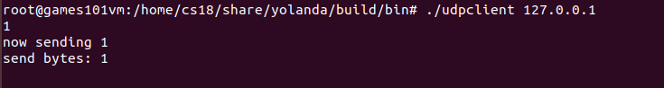
只运行客户端，程序会一直阻塞在
recvfrom上 -
场景二：先开启服务端，再开启客户端
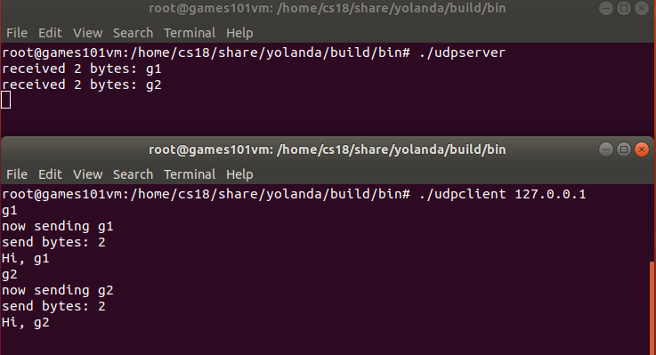
-
场景三: 开启服务端，再一次开启两个客户端
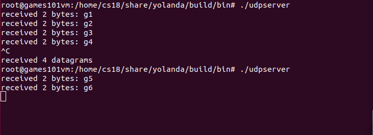
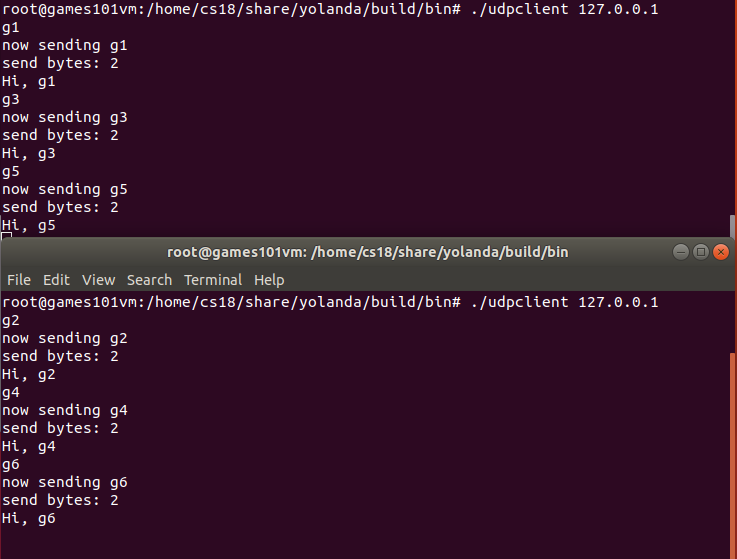
两个客户端发送的报文依次被服务端收到，客户端也可以收到服务端处理之后的报文，如果此时把服务器端进程杀死，可以看到打印出服务器端接收到的报文个数
之后再重启服务器端进程，并使用客户端 1 和客户端 2 继续发送新的报文，服务器端可以继续收到客户端的报文（说明 UDP 报文无上下文）
在第一个场景中
recvfrom一直处于阻塞状态中，这是非常不合理的，这种情形应该怎么处理呢？一直阻塞会导致程序无法正常退出，可以使用接收超时、IO多路复用的超时机制
UDP 是请求 - 应答模式的，那么请求中的 UDP 报文最大可以是多大呢？
IP和UDP头中都有16bit的长度字段，最长65535字节，去掉头部长度得到UDP数据净荷长度：65535-20-8=65507字节
-
1.7 本地套接字
1.7.0 示例
-
实际上本地套接字是 IPC 的一种实现方式，因为本地套接字开发便捷，接受度高，普遍适用于在同一台主机上进程间通信的各种场景
-
比如 Kubernetes 的 CRI
Container Runtime Interface，其思想是将 Kubernetes 的主要逻辑和 Container Runtime 的实现解耦 -
kubelet 是 Kubernetes 的一个组件，负责将控制器和调度器的命令转化为单机上的容器实例，为了实现和容器运行时的解耦，kubelet 设计了基于本地套接字的客户端 - 服务器 GRPC 调用，在路径为 /var/run/dockershim.socket 的 stream 类型的本地套接字上可以看到开启这个套接字的进程为 kubelet（还有 docker-containerd.sock 等其他本地套接字）

1.7.1 本地套接字概述
- 本地套接字也叫做 UNIX 域套接字，是一种特殊类型的套接字，本地套接字提供了一种单主机跨进程间调用的手段，减少了协议栈实现的复杂度，效率更高
- 类似的 IPC 机制还有 UNIX 管道、共享内存和 RPC 调用等
- 本地套接字的编程接口和 IPv4、IPv6 套接字编程接口是一致的，可以支持字节流和数据报两种协议
1.7.2 本地字节流套接字
-
示例：服务器程序打开本地套接字后，接收客户端发送来的字节流，并往客户端回送了新的字节流
-
服务端
#include "lib/common.h" int main(int argc, char **argv) { if (argc != 2) { error(1, 0, "usage: unixstreamserver <local_path>"); } int listenfd, connfd; socklen_t clilen; struct sockaddr_un cliaddr, servaddr; listenfd = socket(AF_LOCAL, SOCK_STREAM, 0); // if (listenfd < 0) { error(1, errno, "socket create failed"); } // 创建一个本地地址 char *local_path = argv[1]; unlink(local_path); // unlink 把存在的文件删除以保持幂等性 bzero(&servaddr, sizeof(servaddr)); servaddr.sun_family = AF_LOCAL; strcpy(servaddr.sun_path, local_path); // 设置本地文件路径 if (bind(listenfd, (struct sockaddr *) &servaddr, sizeof(servaddr)) < 0) { error(1, errno, "bind failed"); } if (listen(listenfd, LISTENQ) < 0) { error(1, errno, "listen failed"); } clilen = sizeof(cliaddr); if ((connfd = accept(listenfd, (struct sockaddr *) &cliaddr, &clilen)) < 0) { if (errno == EINTR) error(1, errno, "accept failed"); /* back to for() */ else error(1, errno, "accept failed"); } char buf[BUFFER_SIZE]; while (1) { // 使用 read 和 write 从套接字中按照字节流的方式读取和发送数据 bzero(buf, sizeof(buf)); if (read(connfd, buf, BUFFER_SIZE) == 0) { printf("client quit"); break; } printf("Receive: %s", buf); char send_line[MAXLINE]; sprintf(send_line, "Hi, %s", buf); int nbytes = sizeof(send_line); if (write(connfd, send_line, nbytes) != nbytes) error(1, errno, "write error"); } close(listenfd); close(connfd); exit(0); }- 本地字节流套接字识别服务器不再通过 IP 地址和端口，而是通过本地文件
- 本地文件路径应该是绝对路径，这样的话编写好的程序可以在任何目录里被启动和管理，如果是相对路径，这个程序的启动路径就必须固定，对程序的管理反而是一个很大的负担
- 如果文件不存在，bind 时会自动创建这个文件
-
客户端
#include "lib/common.h" int main(int argc, char **argv) { if (argc != 2) { error(1, 0, "usage: unixstreamclient <local_path>"); } int sockfd; struct sockaddr_un servaddr; sockfd = socket(AF_LOCAL, SOCK_STREAM, 0); if (sockfd < 0) { error(1, errno, "create socket failed"); } bzero(&servaddr, sizeof(servaddr)); servaddr.sun_family = AF_LOCAL; strcpy(servaddr.sun_path, argv[1]); // sun_path 初始化，表示目标文件路径 // 发起对目标套接字的 connect 调用 if (connect(sockfd, (struct sockaddr *) &servaddr, sizeof(servaddr)) < 0) { error(1, errno, "connect failed"); } // 从标准输入中读取字符串 char send_line[MAXLINE]; bzero(send_line, MAXLINE); char recv_line[MAXLINE]; while (fgets(send_line, MAXLINE, stdin) != NULL) { int nbytes = sizeof(send_line); // 向服务器端发送 if (write(sockfd, send_line, nbytes) != nbytes) error(1, errno, "write error"); if (read(sockfd, recv_line, MAXLINE) == 0) error(1, errno, "server terminated prematurely"); fputs(recv_line, stdout); } exit(0); } -
运行
-
只启动客户端
- 客户端直接报错，提示没有文件存在
-
服务器端监听在无权限的文件路径上
- 启动服务器端程序的用户，必须对本地监听路径有权限
-
服务器和客户端正常启动
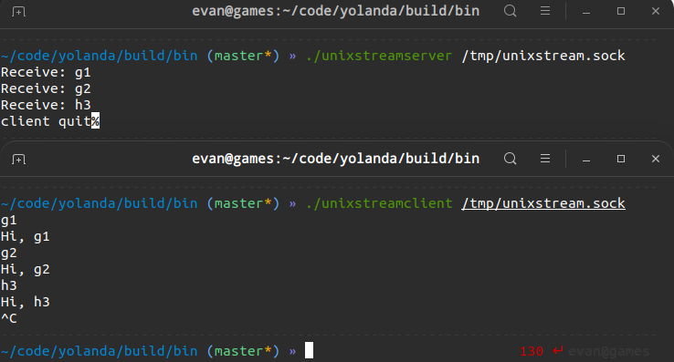
-
1.7.3 本地数据报套接字
-
服务端
#include "lib/common.h" int main(int argc, char **argv) { if (argc != 2) { error(1, 0, "usage: unixdataserver <local_path>"); } int socket_fd; socket_fd = socket(AF_LOCAL, SOCK_DGRAM, 0); // if (socket_fd < 0) { error(1, errno, "socket create failed"); } struct sockaddr_un servaddr; char *local_path = argv[1]; unlink(local_path); bzero(&servaddr, sizeof(servaddr)); servaddr.sun_family = AF_LOCAL; strcpy(servaddr.sun_path, local_path); if (bind(socket_fd, (struct sockaddr *) &servaddr, sizeof(servaddr)) < 0) { error(1, errno, "bind failed"); } char buf[BUFFER_SIZE]; struct sockaddr_un client_addr; socklen_t client_len = sizeof(client_addr); while (1) { // 使用 recvfrom 和 sendto 来进行数据报的收发 bzero(buf, sizeof(buf)); if (recvfrom(socket_fd, buf, BUFFER_SIZE, 0, (struct sockadd *) &client_addr, &client_len) == 0) { printf("client quit"); break; } printf("Receive: %s \n", buf); char send_line[MAXLINE]; bzero(send_line, MAXLINE); sprintf(send_line, "Hi, %s", buf); size_t nbytes = strlen(send_line); printf("now sending: %s \n", send_line); if (sendto(socket_fd, send_line, nbytes, 0, (struct sockadd *) &client_addr, client_len) != nbytes) error(1, errno, "sendto error"); } close(socket_fd); exit(0); } -
客户端
#include "lib/common.h" int main(int argc, char **argv) { if (argc != 2) { error(1, 0, "usage: unixdataserver <local_path>"); } int socket_fd; socket_fd = socket(AF_LOCAL, SOCK_DGRAM, 0); if (socket_fd < 0) { error(1, errno, "socket create failed"); } struct sockaddr_un servaddr; char *local_path = argv[1]; unlink(local_path); bzero(&servaddr, sizeof(servaddr)); servaddr.sun_family = AF_LOCAL; strcpy(servaddr.sun_path, local_path); // 指定一个本地路径，以便在服务器端回包时可以正确地找到地址 if (bind(socket_fd, (struct sockaddr *) &servaddr, sizeof(servaddr)) < 0) { error(1, errno, "bind failed"); } char buf[BUFFER_SIZE]; struct sockaddr_un client_addr; socklen_t client_len = sizeof(client_addr); while (1) { bzero(buf, sizeof(buf)); if (recvfrom(socket_fd, buf, BUFFER_SIZE, 0, (struct sockadd *) &client_addr, &client_len) == 0) { printf("client quit"); break; } printf("Receive: %s \n", buf); char send_line[MAXLINE]; bzero(send_line, MAXLINE); sprintf(send_line, "Hi, %s", buf); size_t nbytes = strlen(send_line); printf("now sending: %s \n", send_line); if (sendto(socket_fd, send_line, nbytes, 0, (struct sockadd *) &client_addr, client_len) != nbytes) error(1, errno, "sendto error"); } close(socket_fd); exit(0); } -
运行
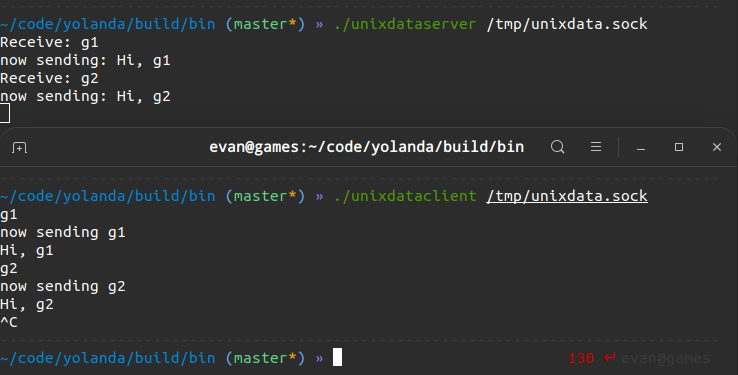
工具使用
ping
-
ping 命名来自于声呐探测，在网络上用来完成对网连通性的探测
-
ping 基于ICMP协议（网际控制协议）开发
-
例：使用 ping 探测和新浪网的网络连通性

- 每次显示是按照 sequence 序列号排序
- 显示了 TTL，反映两个 IP 地址之间传输的时间
- 还显示了 ping 命令的统计信息，如最小时间、平均时间等
ifconfig
-
用来显示当前系统中的所有网络设备（网卡列表）
-
示例

-
第一行：
<UP,BROADCAST,RUNNING,MULTICAST>：网络设备的状态标识- UP：网卡开启状态
- BROADCAST：网卡有广播地址，可发送广播
- RUNNING：网线处于连接状态
- MULTICAST：表示网卡可以发送多播包
mtu 1500：最大传输单元 MTU 为 1500，表示的是链路层包的大小，这是以太网的默认值，规定连 MAC 头带正文合起来，不允许超过 1500 个字节，如果放不下就需要分片来传输 -
第二行：
inet 192.168.121.143 netmask 255.255.255.0 broadcast 192.168.121.255：网卡的IP地址、子网掩码、广播地址 -
第三行：IPV6配置信息
-
第四行：
ether 52:00:74:f8:9f:56 txqueuelen 0 (Ethernet)：网卡的MAC地址-
ether：连接类型为以太网 -
txqueuelen：传输队列的长度
-
-
第五六行：网卡接受数据包的统计信息和接受错误的统计信息
-
第七八行：网卡发送数据包的统计信息和发送错误的统计信息
-
netstat
-
netstat（network statistics）是在内核中访问网络连接状态及其相关信息的命令行程序，可以显示路由表、实际的网络连接和网络接口设备的状态信息，以及与 IP、TCP、UDP、ICMP 协议相关的统计数据，一般用于检验本机各端口的网络服务运行状况
-
命令选项
- -a：列出 TCP、UDP 和 Unix 协议下所有套接字的所有连接
- -t：列出 TCP 协议的连接，可和 -a选项配合使用
- -u：列出 UDP 协议的连接
- -n：禁用反向域名解析，加快查询速度，用户 ID 和端口号也优先使用数字显示
- -l：只列出正在监听的连接（不能和 -a 选项同时使用）
- -p：查看进程信息
- -pe：同时查看进程名和进程所属的用户名
- -s：输出针对不同网络协议的统计信息
-
当前所有的连接详情
netstat -apen
lsof
-
常见用途之一是找出在指定的 IP 地址或者端口上打开套接字的进程
-
Isof 和 netstst 可以结合使用
-
lsof 可以找出正在使用该端口的进程，从而帮助定位问题
lsof -i :8080
tcpdump
-
抓包工具，具有非常强大的过滤和匹配功能
-
在开启抓包时 tcpdump 会自动创建一个类型为 AF_PACKET 的网络套接口，并向系统内核注册，当网卡接收到一个网络报文之后，会遍历系统中所有已经被注册的网络协议，内核接下来就会将网卡收到的报文发送给该协议的回调函数进行处理，回调函数可以把接收到的报文复制一份交给 tcpdump 程序，进行各种条件的过滤和判断后对报文进行解析输出
-
命令选项
- -D：列出可用于抓包的接口
- -i：指定监听的网卡，
-i any显示所有网卡 - -c：指定要抓取的包数量
- -nn：不做主机名解析，且端口显示为数值
- -w：将抓包数据输出到文件中而不是标准输出，可以同时配合*-G time*选项使得输出文件每 time 秒就自动切换到另一个文件（保存成 cap 格式配合 wireshark）
- -r：从给定数据包文件中读取数据，使用
-表示从标准输入中读取
-
tcpdump 表达式：用于筛选输出
-
表达式由一个或多个单元组成，每个单元一般包含 ID 的修饰符和一个 ID（数字或名称）
-
有三种修饰符

-
proto：可选有 ip、arp、rarp、tcp、udp、icmp、ether 等，默认是所有协议的包
-
dir：可选有 src、dst、src or dst、src and dst，默认为 src or dst
-
type：可选有 host、net、port、portrange，默认为 host
-
-
表达式单元之间可以使用操作符
and / && / or / || / not / !进行连接，从而组成复杂的条件表达式 -
在表达式中出现的 shell 元字符建议使用单引号包围
-
-
示例：
-
查看 TCP，且端口是 80，来自 IP 地址为 192.168.1.25 的包
tcpdump 'tcp and port 80 and src host 192.168.1.25' -
查看 TCP，设置了 SYN 分节的且端口是 80 的包
tcpdump 'tcp and port 80 and tcp[13:1]&2 != 0'tcp[13:1]表示的是 TCP 头部开始处偏移为 13 的字节，如果这个值为 2，说明设置了 SYN 分节
-
-
输出格式

-
Flags [ ]是包的标志，比较常见的包格式如下：[S]：SYN，表示开始连接[.]：没有标记，一般是确认[P]：PSH，表示数据推送[F]：FIN，表示结束连接[R]：RST，表示重启连接
-
seq：包序号，就是 TCP 的确认分组
-
cksum：校验码
-
win：滑动窗口大小
-
length：载荷的长度
-
02 | 网络编程进阶
2.1 TIME_WAIT
- 场景引入：应用服务需要通过发起 TCP 连接对外提供服务，在高并发情况下，TIME_WAIT 状态的连接过多，把本机可用的端口耗尽，应用服务对外表现为不能正常工作，一段时间后处于 TIME_WAIT 的连接被系统回收并关闭后，释放出本地端口，应用服务对外表现为可以正常工作
TCP 四次挥手
-
TCP 四次挥手过程

- 主动关闭方 TCP 发送 FIN 包，表示需要关闭连接，之后主动关闭方进入 FIN_WAIT_1 状态
- 收到 FIN 包的对端执行被动关闭，进入
CLOSE_WAIT状态，并发送一个 ACK 应答- TCP 协议栈为 FIN 包插入一个文件结束符 EOF 到接收缓冲区中，应用程序可以通过 read 调用来感知这个 FIN 包
- read 调用获得 EOF，并将此结果通知应用程序调用 close 关闭它的套接字，也发送一个 FIN 包，被动关闭方将进入
LAST_ACK状态 - 主动关闭方接收到对方的 FIN 包，并确认这个 FIN 包，主动关闭方进入
TIME_WAIT状态，而接收到 ACK 的被动关闭方则进入CLOSED状态 - 经过 2MSL 时间之后，主动关闭方也进入
CLOSED状态 - 注意：
- 只有发起连接终止的一方会进入 TIME_WAIT 状态
- 中间使用 shutdown，执行一端到另一端的半关闭也是可以的
-
大多数真实情况是客户端执行主动关闭，HTTP/1.0 却是由服务器发起主动关闭的
-
主机在 TIME_WAIT 停留持续时间是固定的，是最长分节生命期 MSL（maximum segment lifetime）的两倍，一般称之为 2MSL，时间是从主机 1 接收到 FIN 后发送 ACK 开始计时的，如果在 TIME_WAIT 时间内又接收到了主机 2 重发的 FIN 报文，那么 2MSL 时间将重新计时（目的是为了让旧连接的所有报文都能自然消亡）
-
Linux 里有一个硬编码的字段
TCP_TIMEWAIT_LEN值为 60 秒，Linux 停留在 TIME_WAIT 的时间为固定的 60 秒#define TCP_TIMEWAIT_LEN (60*HZ) /* how long to wait to destroy TIME- WAIT state, about 60 seconds */
TIME_WAIT 的作用
-
为了确保最后的 ACK 能让被动关闭方接收从而帮助其正常关闭
- 比如主机 1 的 ACK 报文没有传输成功，那么主机 2 就会重新发送 FIN 报文，处于 TIME_WAIT 状态的主机 1 可以在接收到 FIN 报文之后，重新发出一个 ACK 报文
- 如果没有维护 TIME_WAIT 状态，而直接进入 CLOSED 状态，它就失去了当前状态的上下文，只能回复一个 RST 操作，从而导致被动关闭方出现错误
-
为了让旧连接的重复分节在网络中自然消失
- 如果迷走报文到达时，发现 TCP 连接四元组所代表的连接不存在，报文自然丢弃，但在原连接中断后，可能又重新创建了一个和原连接四元组完全相同的“化身”，到达的迷走报文会被误认为是连接“化身”的一个 TCP 分节，就会对 TCP 通信产生影响
- 经过 2MSL 时间足以让两个方向上的分组都被丢弃，使得原来连接的分组在网络中都自然消失，再出现的分组都是新化身所产生的
TIME_WAIT 的危害
-
内存资源占用，但不是太严重，基本可以忽略
-
端口资源占用，一个 TCP 连接至少消耗一个本地端口，一般可以开启的端口为 32768～61000 ，也可通过
net.ipv4.ip_local_port_range指定，如果 TIME_WAIT 状态过多，会导致无法创建新连接
如何优化 TIME_WAIT
-
net.ipv4.tcp_max_tw_buckets（不推荐使用）
- 值默认为 18000
- 通过 sysctl 命令将系统值调小，当系统中处于 TIME_WAIT 的连接一旦超过这个值时，系统就会将所有的 TIME_WAIT 连接状态重置，并且只打印出警告信息，但是这个方法暴力且治标不治本
-
调低
TCP_TIMEWAIT_LEN，重新编译系统 -
SO_LINGER设置（危险行为，不提倡）-
通过设置套接字选项，来设置调用 close 或者 shutdown 关闭连接时的行为
int setsockopt(int sockfd, int level, int optname, const void *optval, socklen_t optlen); --- struct linger { int l_onoff; /* 0=off, nonzero=on */ int l_linger; /* linger time, POSIX specifies units as seconds */ } -
如果
l_onoff为 0，那么关闭本选项，l_linger的值被忽略- 对应了默认行为，close 或 shutdown 立即返回
- 如果在套接字发送缓冲区中有数据残留，系统会将试着把这些数据发送出去
-
如果
l_onoff不为 0， 且l_linger值也为 0struct linger so_linger; so_linger.l_onoff = 1; so_linger.l_linger = 0; setsockopt(s,SOL_SOCKET,SO_LINGER, &so_linger,sizeof(so_linger));-
调用 close 后，会立该发送一个 RST 给对端，该 TCP 连接将跳过四次挥手直接关闭，这种关闭的方式称为强行关闭
-
在这种情况下，排队数据不会被发送，被动关闭方也不知道对端已经彻底断开，只有当被动关闭方接受到 RST 时，会得到一个 connet reset by peer 异常
-
-
如果
l_onoff不为 0， 且l_linger的值也不为 0，那么调用 close 后，调用 close 的线程就将阻塞，直到数据被发送出去，或者设置的l_linger计时时间到
-
-
net.ipv4.tcp_tw_reuse：更安全的设置-
从协议角度理解如果是安全可控的，可以复用处于 TIME_WAIT 的套接字为新的连接所用
-
从协议角度理解的安全可控：
- 只适用于连接发起方（C/S 模型中的客户端）
- 对应的 TIME_WAIT 状态的连接创建时间超过 1 秒才可以被复用
-
前提：需要打开对 TCP 时间戳的支持，即
net.ipv4.tcp_timestamps=1（默认即为 1）- RFC 1323 中实现了 TCP 拓展规范，以便保证 TCP 的高可用，并引入了新的 TCP 选项，两个 4 字节的时间戳字段，用于记录 TCP 发送方的当前时间戳和从对端接收到的最新时间戳
- 由于引入了时间戳，重复数据包会因为时间戳过期被自然丢弃
-
注意：要慎用，因为打开了时间戳的支持，当客户端与服务端主机时间不同步时，客户端的发送的消息会被直接拒绝
-
2.2 优雅关闭连接
- 服务器端优雅地关闭连接：绝大数情况下，TCP 连接都是先关闭一个方向，此时另一个方向还可以正常进行数据传输，服务端完成一些操作并将结果通过套接字写给客户端后，才有条不紊地关闭剩下的半个连接
- 如果服务器端处理不好，就会导致最后的关闭过程是粗暴的，可能服务器端处理完的信息没办法正常传送给客户端，破坏了用户侧的使用场景
close
-
函数原型：
int close(int sockfd)- 若成功则为 0，若出错则为 -1
- 函数会对套接字引用计数 -1，一旦发现套接字引用计数到 0，就会对套接字进行彻底释放，并且会关闭TCP 两个方向的数据流
- 套接字引用计数：因为套接字可以被多个进程共享，如果通过 fork 的方式产生子进程，计数 +1， 如果调用一次 close 函数，计数 -1
-
close 函数是如何关闭两个方向的数据流呢？
- 在输入方向，系统内核会将该套接字设置为不可读，任何读操作都会返回异常
- 在输出方向，系统内核尝试将发送缓冲区的数据发送给对端，并最后向对端发送一个 FIN 报文，接下来如果再对该套接字进行写操作会返回异常
- 如果对端没有检测到套接字已关闭，还继续发送报文，就会收到一个 RST 报文
-
close 函数并不能关闭连接的一个方向
shutdown
-
函数原型：
int shutdown(int sockfd, int howto)-
若成功则为 0，若出错则为 -1
-
howto的设置有三个主要选项：-
SHUT_RD(0)：关闭连接的读方向，对该套接字进行读操作直接返回 EOF，从数据角度来看，套接字上接收缓冲区已有的数据将被丢弃，如果再有新的数据流到达，会对数据进行 ACK，然后悄悄地丢弃 -
SHUT_WR(1)：关闭连接的写方向（不管套接字引用计数的值是多少），这就是常被称为半关闭的连接，套接字上发送缓冲区已有的数据将被立即发送出去，并发送一个 FIN 报文给对端，应用程序如果对该套接字进行写操作会报错 -
SHUT_RDWR(2)：相当于 SHUT_RD 和 SHUT_WR 操作各一次，关闭套接字的读和写两个方向
-
-
-
使用
SHUT_RDWR来调用 shutdown 和 close 的差别-
close 会关闭连接，并释放所有连接对应的资源，而 shutdown 并不会释放掉套接字和所有的资源
-
close 存在引用计数的概念，并不一定导致该套接字不可用；shutdown 则不管引用计数，直接使得该套接字不可用，如果有别的进程企图使用该套接字，将会受到影响
-
close 的引用计数导致不一定会发出 FIN 结束报文，而 shutdown 则总是会发出 FIN 结束报文
-
实验
-
客户端程序，从标准输入不断接收用户输入，把输入的字符串通过套接字发送给服务器端，同时将服务器端的应答显示到标准输出上
如果用户输入了 close，则会调用 close 函数关闭连接，休眠一段时间，等待服务器端处理后退出；如果用户输入了 shutdown，调用 shutdown 函数关闭连接的写方向，并继续等待服务器端的应答，直到服务器端完成自己的操作，在另一个方向上完成关闭
-
服务端打印出接收的字节，并重新格式化后，发送给客户端
-
运行
-
close
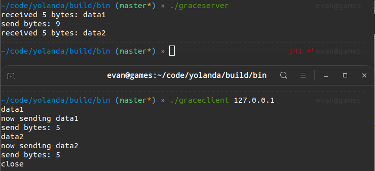
-
客户端依次发送了 data1 和 data2，服务器端也正常接收到 data1 和 data2，在客户端 close 掉整个连接之后，服务器端接收到 SIGPIPE 信号，直接退出，客户端没有收到服务端的应答数据
-
在 RST 的套接字进行写操作，会直接触发 SIGPIPE 信号
-
可以注册一个信号处理函数对 SIGPIPE 信号进行处理，避免程序莫名退出
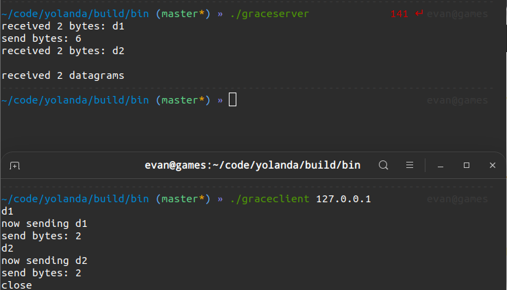
-
-
shutdown
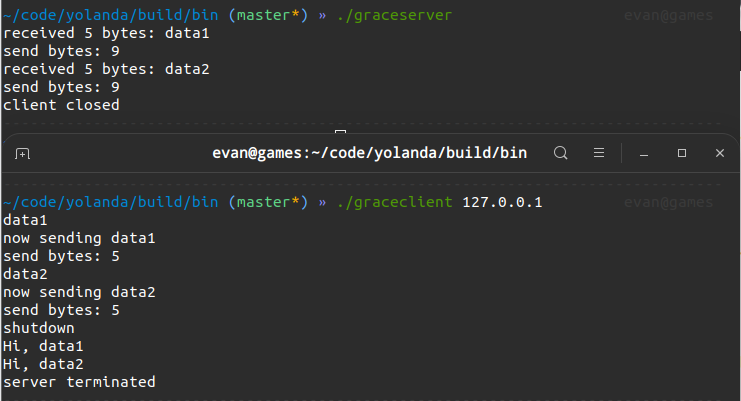
-
客户端和服务器端各自完成了自己的工作后，正常退出
-
客户端调用 shutdown 函数只是关闭连接的一个方向，服务器端到客户端的这个方向还可以继续进行数据的发送和接收
-
当服务器端读到 EOF 时，立即向客户端发送了 FIN 报文，客户端在 read 函数中感知了 EOF，也进行了正常退出
-
-
时序图

-
2.3 检测连接状态
TCP Keep-Alive
-
客户端突然崩溃，服务器端可能在几天内都维护着一个无用的 TCP 连接
-
TCP 有一个保持活跃的机制 Keep-Alive
-
原理：定义一个时间段，在这个时间段内如果没有任何连接相关的活动，TCP 保活机制就会每隔一个时间间隔，发送一个探测报文，如果连续几个探测报文都没有得到响应，则认为当前的 TCP 连接已经死亡，系统内核将错误信息通知给上层应用程序
-
上述可定义变量分别被称为保活时间、保活时间间隔和保活探测次数
-
在 Linux 中这些变量分别对应 sysctl 变量
net.ipv4.tcp_keepalive_time、net.ipv4.tcp_keepalive_intvl、net.ipv4.tcp_keepalve_probes- 默认设置是 7200 秒（2 小时）、75 秒和 9 次探测
- 最少需要经过 2 小时 11 分 15 秒才可以发现一个已死亡的连接，对很多对时延要求敏感的系统中，这个时间间隔是不可接受的
-
TCP Keep-Alive 机制默认是关闭的，可以分别在连接的两个方向上开启，也可以单独在一个方向上开启
- 如果开启服务器端到客户端的检测，就可以在客户端非正常断连的情况下清除在服务器端保留的“脏数据”；
- 开启客户端到服务器端的检测，就可以在服务器无响应的情况下，重新发起连接
-
-
如果开启了 TCP Keep-Alive，需要考虑以下情况：
- 对端程序是正常工作的：当 TCP 保活的探测报文发送给对端，对端会正常响应，这样 TCP 保活时间会被重置，等待下一个 TCP 保活时间的到来
- 对端程序崩溃并重启：当 TCP 保活的探测报文发送给对端后，对端是可以响应的，但由于没有该连接的有效信息，会产生一个 RST 报文，这样很快就会发现 TCP 连接已经被重置
- 对端程序崩溃，或对端由于其他原因导致报文不可达：当 TCP 保活的探测报文发送给对端后，没有响应，连续几次，达到保活探测次数后，TCP 会报告该 TCP 连接已经死亡
应用层探活
- 可以在应用程序中模拟 TCP Keep-Alive 机制来完成在应用层的连接探活
- 可以设计一个 PING-PONG 的机制，需要保活的一方在保活时间达到后，发起对连接的 PING 操作，如果服务器端对 PING 操作有回应，则重新设置保活时间，否则对探测次数进行计数，如果最终探测次数达到了保活探测次数预先设置的值之后，则认为连接已经无效
示例
完成一个这样的设计，关键：
- 需要使用定时器，可以通过使用 I/O 复用自身的机制实现
- 需要设计一个 PING-PONG 的协议
-
消息格式设计
typedef struct { u_int32_t type; char data[1024]; } messageObject; // 四种消息类型 #define MSG_PING 1 #define MSG_PONG 2 #define MSG_TYPE1 11 #define MSG_TYPE2 21 -
客户端程序设计：在保活时间达到后，探活次数增加 1，同时向服务器端发送 PING 格式的消息，此后以预设的保活时间间隔，不断地向服务器端发送 PING 格式的消息，如果能收到服务器端的应答，则结束保活，将保活时间置为 0
-
服务器端程序设计：接收客户端发送来的各种消息后，进行处理，其中如果发现是 PING 类型的消息，在休眠一段时间后回复一个 PONG 消息
实验
-
服务器端休眠时间为 60 秒：客户端在发送了三次心跳检测报文 PING 报文后，判断出连接无效，直接退出
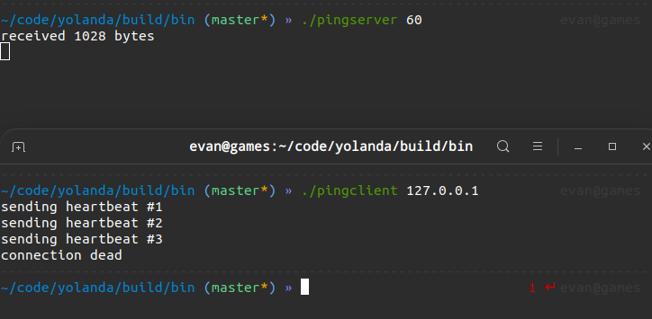
-
服务器端休眠时间为 5 秒
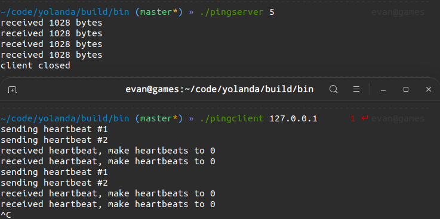
2.4 TCP 动态数据传输
- 在任何一个时刻里，TCP 发送缓冲区的数据是否能真正发送出去，决定的因素有发送窗口大小、拥塞窗口大小等
流量控制
-
TCP 为应用程序提供了流量控制服务（flow control service）以消除发送方使接收方缓存溢岀的可能性，流量控制因此是一个速度匹配服务，即发送方的发送速率与接收方应用程序的读取速率相匹配
-
发送窗口用来控制发送和接收端的流量
-
发送窗口和接收窗口的本质：TCP 的生产者 - 消费者”模型，发送窗口和接收窗口是 TCP 连接的双方，一个作为生产者，一个作为消费者，为了达到一致协同的生产 - 消费速率、而产生的算法模型实现
拥塞控制
-
流量控制只是在考虑单个连接的数据传递，但是 TCP 数据包需要经过网卡、交换机、核心路由器等一系列网络设备，设备本身的能力也是有限的，当多个连接的数据包同时在网络上传送时，势必会发生带宽争抢、数据丢失等，TCP 必须考虑多个连接共享在有限的带宽上，兼顾效率和公平性的控制，这就是拥塞控制的本质
-
在 TCP 协议中，拥塞控制是通过拥塞窗口来完成的，拥塞窗口的大小会随着网络状况实时调整
-
拥塞控制常用的算法有慢启动，通过一定的规则慢慢地将网络发送数据的速率增加到一个阈值，超过阈值后，进入拥塞避免阶段，这个阶段 TCP 会不断地探测网络状况，并随之不断调整拥塞窗口的大小
-
发送窗口反应了作为单 TCP 连接、点对点之间的流量控制模型，它是需要和接收端一起共同协调来调整大小的；而拥塞窗口则是反应了作为多个 TCP 连接共享带宽的拥塞控制模型，它是发送端独立地根据网络状况来动态调整的
其他因素
糊涂窗口综合症
- 场景：接收端处理得急不可待，如刚读入 100 个字节就告诉发送端继续发送
- 在接收端进行优化，接收端不能在接收缓冲区空出一个很小的部分之后，就向发送端发送窗口更新通知，而是需要在自己的缓冲区大到一个合理的值之后，再向发送端发送窗口更新通知
Nagle 算法
- 场景：使用 SSH 和远程的服务器交互，在屏幕上敲打了一个命令，等待服务器返回结果，这个过程需要不断和服务器端进行数据传输，但每次传输的数据可能都非常小（这就好比每次叫了一辆大货车只送了一个小水壶）
- 在发送端进行优化，优化的算法叫做
Nagle算法 Nagle算法的本质其实就是限制大批量的小数据包同时发送，在任何一个时刻，未被确认的小数据包（长度小于最大报文段长度 MSS 的 TCP 分组）不能超过一个，这样发送端就可以把接下来连续的几个小数据包存储起来，等待接收到前一个小数据包的 ACK 分组之后，再将数据一次性发送出去
延时 ACK
- 场景：接收端需要对每个接收到的 TCP 分组进行确认，但是 ACK 报文本身是不带数据的分段，如果一直发送大量的 ACK 报文，就会消耗大量的带宽
- 在接收端进行优化，这个优化的算法叫做延时 ACK，在收到数据后并不马上回复，而是累计需要发送的 ACK 报文，等到有数据需要发送给对端时，将累计的 ACK 一并发送
- 延时 ACK 机制不能无限地延时下去，否则发送端误认为数据包没有发送成功，引起重传，反而会占用额外的网络带宽
禁用 Nagle 算法
-
Nagle 算法和延时 ACK 的组合，会增大处理时延，两个优化彼此在阻止对方，在有些情况下 Nagle 算法并不适用， 比如对时延敏感的应用

-
可以通过对套接字的修改来关闭 Nagle 算法
int on = 1; setsockopt(sock, IPPROTO_TCP, TCP_NODELAY, (void *)&on, sizeof(on));注意：除非有十足的把握，否则不要轻易改变默认的 TCP Nagle 算法，因为在现代操作系统中，针对 Nagle 算法和延时 ACK 的优化已经非常成熟了，有可能在禁用 Nagle 算法之后，性能问题反而更加严重
将写操作合并
-
如果能将一个请求一次性发送过去，而不是分开两部分独立发送，结果会好很多，可以在写数据之前，将数据合并到缓冲区再批量发送
-
可使用如下方法进行数据读写操作，从而避免 Nagle 算法引发的副作用
struct iovec { void *iov_base; /* starting address of buffer */ size_t iov_len; /* size of buffer */ }; ssize_t writev(int filedes, const struct iovec *iov, int iovcnt) ssize_t readv(int filedes, const struct iovec *iov, int iovcnt); -
实验
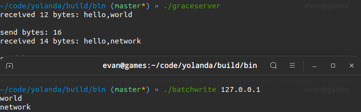
2.5 快速重启
服务器端程序重启时，地址被占用的原因和解决方法
2.7 如何理解 TCP 流
2.5 UDP Connect
03 | 网络编程实战
未完待续
最后一次更新：2022.05.05
编程语言的I/O模型是通过抽象和设计，总结出的一套规范。